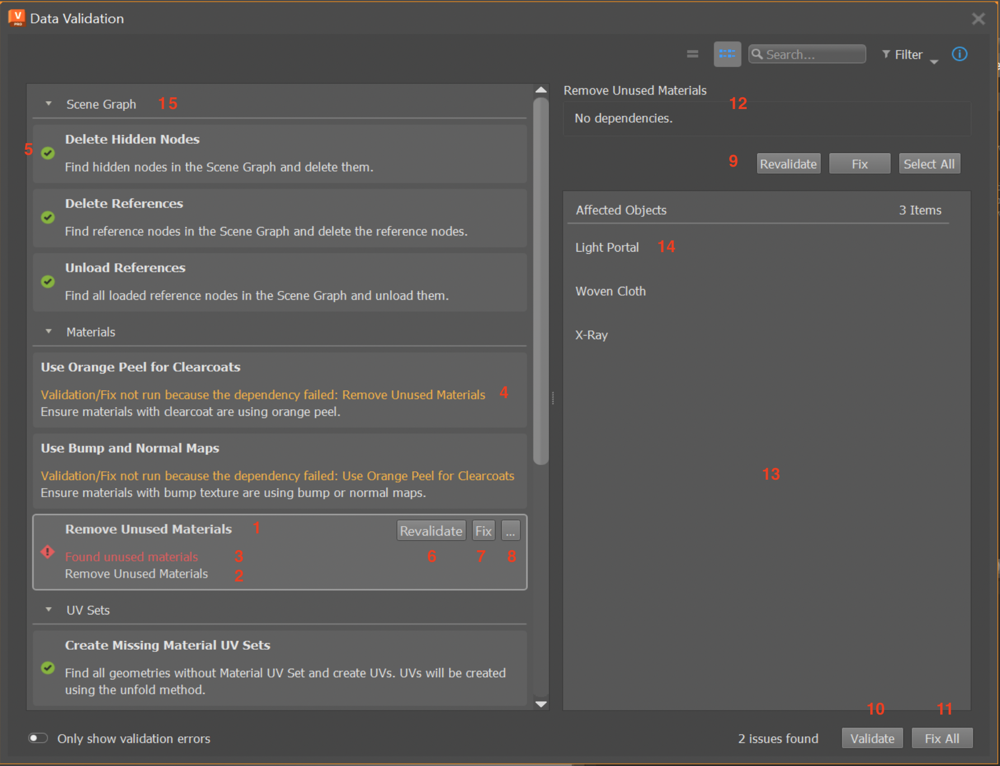

Getting Started
The Data Validation App (DVA) is a Toolkit App that can be set up to be used with any DCC. It provides a flexible framework to validate the data within a DCC, according to the Validation Rule Set that you define.
- Here are the steps to get started with the app:
Refer back to Using the Data Validation App for more details about the app’s functionality and how it works.
Adding Data Validation to the Engine
The DVA must be run within an Engine. The app can be added to an Engine using the config, as like any other Toolkit App:
settings.tk-vred.asset_step:
apps:
tk-multi-data-validation: "@settings.tk-multi-data-validation.vred"
To start validating your DCC’s data, the Engine must be set up to support the data validation workflow. See next steps in Setting Up the Data Validation Hook on how to modify the Engine.
For Engines that have already been set up, see Customizing the Validation on how to modify the validation to your specific needs.
Setting Up the Data Validation Hook
The DVA requires information from the Engine to determine how it will display and perform the data validation. This information is retrieved using the hook_data_validation. The DVA config settings must be modified to specify the hook_data_validation file that the Engine will use to implement the hook methods:
settings.tk-multi-data-validation.vred:
location: "@apps.tk-multi-data-validation.location"
hook_data_validation: "{engine}/tk-multi-data-validation/basic/data_validation.py"
Defining the Validation Rule Set
The DVA performs the validation on the data in the DCC by using a Validation Rule Set. The DVA itself is not DCC specific, and thus does not define the validation rule set. The responsibility is on the Engine (which is DCC specific) to establish this rule set.
In the previous step, the Engine’s hook_data_validation file was set up. Now in the hook file, we need to implement the hook method get_validation_data to return the validation rule set. See the example below on how to override this hook method:
import sgtk
HookBaseClass = sgtk.get_hook_baseclass()
class VREDDataValidationHook(HookBaseClass):
"""Subclass the base tk-multi-data-validation hook class AbstractDataValidationHook."""
def get_validation_data(self):
"""Override the base hook method to return the VRED Validation Rule Set."""
return {
"delete_hidden_nodes": {
"name": "Delete Hidden Nodes",
"description": "Find and delete all hidden nodes in the scene.",
"check_func": find_hidden_nodes,
"fix_func": do_delete_hidden_nodes,
"actions": [
{
"name": "Select All Hidden Nodes",
"callback": select_nodes
}
],
"item_actions": [
{
"name": "Select Node",
"callback": select_node
}
],
}
}
This is a simple example where there is only one rule in the set. The rule id is delete_hidden_nodes and the data for the rule is in the key-value dictionary. More rules can be added by adding more items to the dictionary. The supported rule data key-values:
name: (str) The rule display name
description: (str) The rule descriptive text
check_func: (function) The rule validate callback function, applied to all data
fix_func: (function) The rule fix callback function, applied to all data
actions: (List[dict]) A list of action callback functions, applied to all data. Item key-values: name (str): the action name, callback (function): the callback function
item_actions: (List[dict]) A list of action callback functions, applied to single afected object. Item key-values: name (str): the action name, callback (function): the callback function
check_name: (str) The validate button text label
fix_name: (str) The fix button text label
fix_tooltip: (str) Text to display on hovering over the fix button
error_msg: (str) Text that describes why the data is not valid
warn_msg: (str) Text that describes warnings for this rule
kwargs: (function) A function that returns a dictionary to pass as key-word arguments to fix and action callbacks
dependcy_ids: (List[str]) A list of rule ids which this rule depends on
Defining Validation Rule Callbacks
Each validation rule defined in the Validation Rule Set dictionary may specify callback functions:
check_func: callback to validate the data by this rule (see Check Function)
fix_func: callback to fix the data by this rule (see Fix Function)
actions: callbacks to execute on all of the Affected Objects for this rule (see Actions)
item_actions: callbacks to execute on a single Affected Object for this rule (see Item Actions)
These callback functions can be implemented as hook methods; for example, these are the functions to implement to make the delete_hidden_nodes rule effective:
class VREDDataValidationHook(HookBaseClass):
"""Subclass the base tk-multi-data-validation hook class AbstractDataValidationHook."""
#
# other class methods omitted
#
def find_hidden_nodes(self):
"""Implement the check function for the delete hidden nodes rule."""
def do_delete_hidden_nodes(self, errors=None):
"""Implement the fix function for the delete hidden nodes rule."""
def select_nodes(self, errors=None):
"""Implement the select action function for the delete hidden nodes rule."""
def select_node(self, errors=None):
"""Implement the select item action function for the delete hidden nodes rule."""
The purpose of the rule’s check_func is to validate the current data according to some criteria. For example, the delete_hidden_nodes check function find_hidden_nodes method should look for hidden nodes in VRED and return the list of hidden node objects that were found:
def find_hidden_nodes(self):
"""
Find hidden nodes in VRED.
:return: A list of hidden nodes.
:rtype: List[vrdNode]
"""
# Assume the find_nodes function exists and returns a list VRED node objects
return find_nodes(hidden=True)
Notice that find_hidden_nodes returns a list of VRED objects. The DVA does not have any knowledge of VRED objects, so it will call the hook method
sanitize_check_result to convert the list of VRED objects into a standardized format, which it can handle. For example, the VRED Engine overrides this hook method:
sanitize_check_result class VREDDataValidationHook(HookBaseClass):
"""Subclass the base tk-multi-data-validation hook class AbstractDataValidationHook."""
def sanitize_check_result(self, result):
"""
Return the check result in the Data Validation standardized format.
:param result: A result returned by any of the VRED rule check functions.
:type result: We expect it to be a list of VRED objects
"""
# The result is the value returned by a check function, which is expected to be
# the list of error objects found. So this check result is valid if the
# result is an empty list, or None.
#
# NOTE: you may want to put in some safe guards against the result data
# passed to the method to ensure it is in the format you expect
valid = not result
# Gather the list of errors from the result and put it into the DVA format
# NOTE: VRED objects have the attributes getObjectID, getName, getType
errors = []
for item in result:
error_item = {
"id": item.getObjectID(),
"name": item.getName(),
"type": item.getType()
}
errors.append(error_item)
# The DVA expects a dictionary with key-values:
# - is_valid (bool): True if result passed the check, else False
# - errors (List[dict]): The errors found by the check
# Each error item with keys-values:
# - id (str|int): Unique identifier for the error object
# - name (str): Display name for the error object
# - type (str): Display name for the error object type (optional)
return {
"is_valid": valid,
"errors": errors
}
Now that the rule’s Check Function is implemented, and the result is sanitized for the DVA to handle, the rule’s Fix Function needs to be implemented next:
def do_delete_hidden_nodes(self, errors=None):
"""
Delete the given error objects, which are hidden nodes.
The errors passed in will be the same errors as returned by the check function
``find_hidden_nodes`` and sanitized by the ``sanitize_check_result`` function.
So for example if ``find_hidden_nodes`` returned:
[node_1, node_2]
, then the sanitize method would yield:
{
"is_valid": False,
"errors": [
{
"id": node_1_id,
"name": "Node 1",
"type": vrdNode
},
{
"id": node_2_id,
"name": "Node 2",
"type": vrdNode
}
]
}
, and so the ``errors`` key value in the dict of the sanitized result is the
value passed to this function:
[
{
"id": node_1_id,
"name": "Node 1",
"type": vrdNode
},
{
"id": node_2_id,
"name": "Node 2",
"type": vrdNode
}
]
If no errors are given, we will interpret this as delete all hidden nodes.
:param errors: The hidden nodes to delete. If None, delete all hidden nodes.
:type errors: List[dict] | None
"""
if errors is None:
# No errors provided, find all hidden nodes to delete
nodes = find_hidden_nodes()
else:
# Errors are provided, gather the node objects from the error data
# Assume the get_node_by_id function exists and returns the node object for the given id
nodes = []
for error_data in errors:
node = get_node_by_id(error_data["id"])
nodes.append(item)
# Delete the hidden nodes found. Assume the delete_node function exists.
for node in nodes:
delete_node(n)
Finally, the action and item action functions need to be implemented. These functions are called in the same way that the Fix Function is called with the list of errors:
def select_nodes(self, errors=None):
"""
Select the given nodes.
:param errors: The list of nodes to select.
:type errors: List[dict]
""""
# Don't select anything unless specified
if not errors:
return
# Errors are provided, gather the node objects from the error data
# Assume the get_node_by_id function exists and returns the node object for the given id
nodes = []
for error_data in errors:
node = get_node_by_id(error_data["id"])
nodes.append(item)
# Select the nodes in VRED
vred_select_nodes(nodes)
def select_node(self, errors=None):
"""
Select the given node.
TODO double-check this
:param errors: A list containing a single node.
:type errors: List[dict]
""""
self.select_nodes(errors)
Displaying Validation Rules in the App
The Validation Rule Set returned by the get_validation_data method defines all of the available rules that can be added to the app. To have these rules show up in the DVA, the app config settings file must be updated:
settings.tk-multi-data-validation.vred:
location: "@apps.tk-multi-data-validation.location"
hook_data_validation: "{engine}/tk-multi-data-validation/basic/data_validation.py"
rules:
- id: delete_hidden_nodes
If we wanted to hide the delete_hidden_nodes rule and not show in the app, we can remove the - id: delete_hidden_nodes line from the config. See App Config Settings for more details about the tk-multi-data-validation.yml settings file.
Mapping Validation Rule Fields to the User Interface
To help visualize and understand what each of the fields in the Validation Rule Set affect, here is a mapping of the user interface elements to the rule set dictionary fields:
1. Validation rule
The highlighted item in the view is a Validation Rule. All rules in the view make up the Validation Rule Set. The rule’s display name and is set by the
namefield.
2. Validation rule description
This is the rule’s descriptive text and is set by the
descriptionfield.
3. Validation rule error message
This is the rule’s error message. Error messages are shown when the rule’s Check Function has failed. The
error_msgfield will be appended to rule’s error message.
4. Validation rule warning message
This is the rule’s warning message. Warning messages are always shown (in yellow). The
warn_msgfield will be appended to rule’s warning message.
5. Validation rule status icon
This is the rule’s validation status from the last time its Check Function ran. The status is determined by running the function set by the
check_funcfield.
6. Validate rule button
Clicking this button will validate the data according to the rule’s criteria. The validation is performed by calling the function set by the
check_funcfield, which is referred to as the Check Function. The button text is set by thecheck_namefield.
7. Fix rule button
Clicking this button will fix the data according to the rule. The fix is performed by calling the function set by the
fix_funcfield, which is referred to as the Fix Function. The button text is set by thefix_namefield.
8. Rule actions button menu
Clicking this button will pop up the actions menu for the rule. The list of menu actions are set by the
actionsfield, which are referred to as the rule’s Actions. Clicking on any of the menu actions will call that particular action callback function. The actions menu can also be opened by right-clicking on the rule item in the view, or clicking the button from the details panel.
9. Details panel
The details panel will show more information for the currently select rule in the view. The row of buttons are function the same as the buttons on the rule item in the view. They will be shown in this order: validate button, fix button, all action buttons. See the particular button descriptions above for which fields affect these buttons.
10. Validate all button
Clicking this button will run each of the rule’s own Check Function. The check function is set by the
check_funcfield.
11. Fix all button
Clicking this button will run each of the rule’s own Fix Function. The fix function is set by the
fix_funcfield.
12. Details panel information
This is the currently selected rule’s detailed information. The details indicate that the rule in the example has no dependencies. The rule dependencies are set by the
dependency_idsfield. Dependencies determine the order in which rules are validated and fixed.
13. Details panel affected objects
The view lists the Affected Objects after validating the current data by the rule. These are essentially data errors found by running the rule’s Check Function.
14. Affected object item
An affected object is an error found by running the rule’s Check Function. Right click the item to see the list of Item Actions set by the
item_actionsfield. Hover over the item to see the first item action. Click any of the item actions to call the corresponding callback function.
15. Rule grouping
This is a grouping of rules. A rule’s group is set by the
data_typefield, which can also be set in the app App Config Settings.